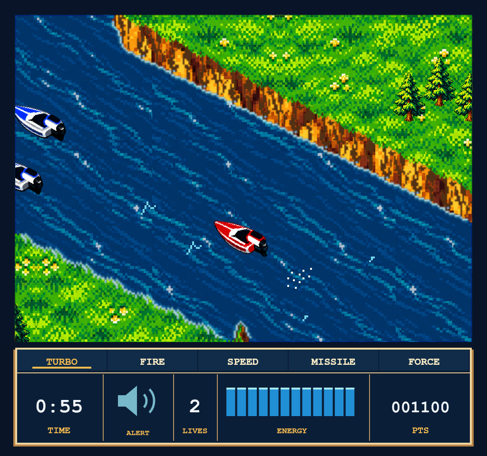
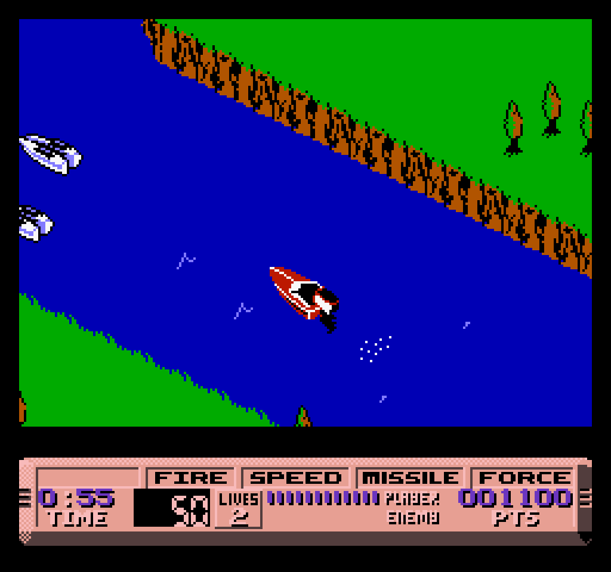
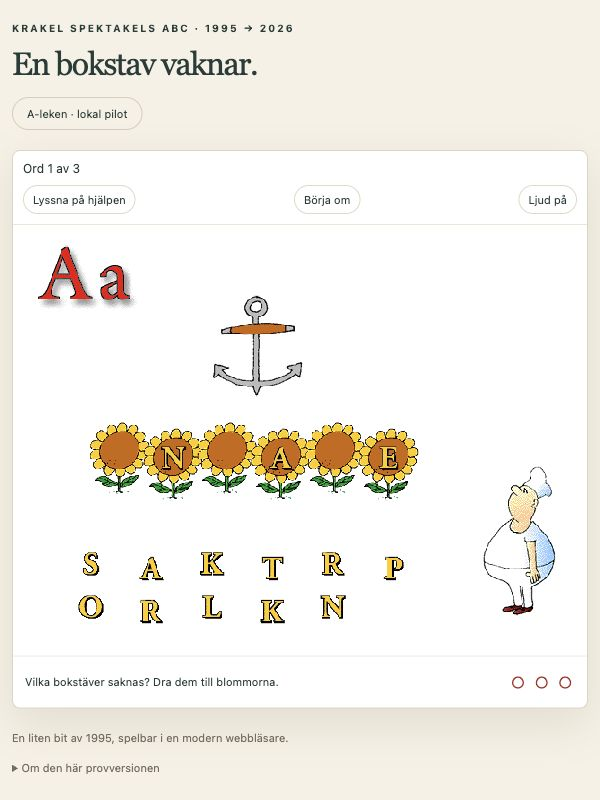

EXPERIMENTTre försök med ai
Gammal kod – nytt liv
Samma flod, ett nytt utseende


OriginalVår version
Samma spelmotor och spelögonblick. Reglaget jämför grafiken; de ändrade spelreglerna visas inte här.
Ett ankare börjar på A
Bilden kommer från originalskivan. I vår spelbara webbversion hörs också originalets inspelade ord. Här utforskar vi en skärmbild.
Tryck på markeringarna för en visuell genomgång. Det här är en skärmbild av webbversionen, inte ett spelbart smakprov.
REDO ATT LYSSNALJUDTEST
Nattpass
Ny Teknik · egen testmusik
0:00
0:16
Tryck på Eleven för att växla effekt.
Hörlurar rekommenderas.
Samma utseende som vår Mac-app. Här växlar knappen mellan två förberedda versioner av vår egen testmusik, med och utan den gamla Enhancer-motorn. Spotify behövs inte.